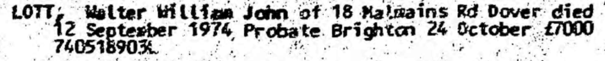

Walter William John Lott 1920 - 1974
[ Home ] | [ Calendar ] | [ Surnames Index ] | [ Family History ], Walter Lott, the husband of Iris Joan Horne (the first cousin once-removed on the father's side of Nigel Horne), was born in Canterbury, Kent, England on Aug 31, 1920<span class="citation">1,2,3</span> and. He married Iris (a probationer nurse in training with whom he had 4 surviving children <a href="I724.html">Maureen E</a>, <a href="I723.html">Susan J</a>, <a href="I722.html">Robert J</a> and <a href="I721.html">Margaret A</a>) in Thanet, Kent, England around Aug 1943<span class="citation">4</span>.</p><p>Throughout his life, he lived on 13 Windsor Road in Canterbury on Sep 29, 1939<span class="citation">1</span>; and on 18 Malmains Road, Dover, Kent in 1974<span class="citation">5</span>. <p>He died on Sep 12, 1974 in Dover, Kent<span class="citation">2,3</span>.
Citations
- 1939 Register - Findmypast (was the son of the head of the household)
- England & Wales deaths 1837-2007 - Findmypast
- England & Wales, Death Index: 1984-2005 Online publication - Provo, UT, USA: The Generations Network, Inc., 2007.Original data - General Register Office. England and Wales Civil Registration Indexes. London, England: General Register Office. © Crown copyright. Published by permission of the Cont
- England & Wales, Marriage Index: 1916-2005 Online publication - Provo, UT, USA: The Generations Network, Inc., 2009.Original data - General Register Office. England and Wales Civil Registration Indexes. London, England: General Register Office. © Crown copyright. Published by permission of the Cont
- According to his probate notice
Media
William Lott - probate

England & Wales deaths 1837-2007 Transcription - BMD-D-1974-3-AZ-000637-048
England & Wales births 1837-2006 Transcription - BMD-B-1920-3-AZ-001000-059
1939 Register Transcription - TNA-R39-1679-1679E-024-01
England & Wales marriages 1837-2008 - BMD/M/1943/3/AZ/000752/114
Family Tree

Generated by Ged2Site. Last updated on Jul 20, 2025